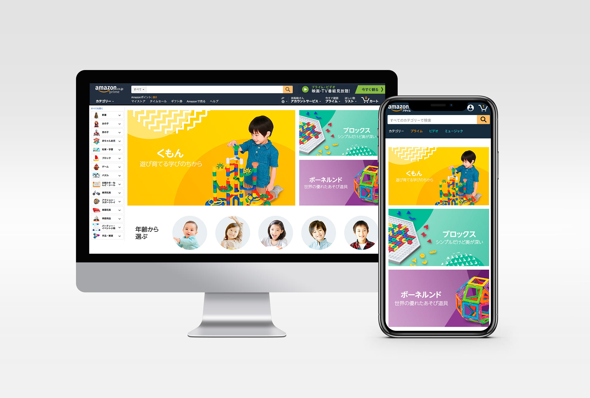

The toy category page on Amazon Japan had grown organically over the years, resulting in a cluttered layout that didn't match how customers actually browsed. Mobile traffic accounted for over 60% of visits, yet the page was primarily designed for desktop. The goal was a complete UX overhaul — creating a unified, responsive experience grounded in real user behavior data.
As the lead UX designer, I was responsible for the full end-to-end process: from initial research through to final design delivery and user validation.
The redesigned toy page delivered a cleaner, more intuitive experience that aligned with how customers actually browsed. Key outcomes included: